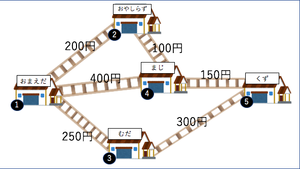
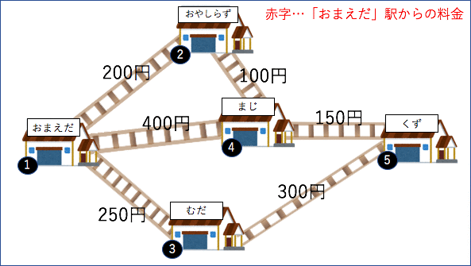

図解 -ワーシャルフロイドとは

void warshall_floyd(){
for(int k=0;k<V;k++){
for(int i=0;i<V;i++){
for(int j=0;j<V;j++){
if(d[i][j]>d[i][k]+d[k][j])d[i][j]=d[i][k]+d[k][j];//i→jかi→k→jのどちらがいいのか比べる
}
}
}
}
ソースコードと解説
#include<stdio.h>
#define INF 1001
int main(){
int n,m,i,j;
while(1){
scanf("%d %d",&n,&m);
if(n==0 && m==0)break;
int root[m+1][m+1];
for(i=1;i<=m;i++){
for(j=1;j<=m;j++){
root[i][j]=INF;//はじめに大きい数字で埋めとく
if(i==j)root[i][j]=0; //A→Aのコストは0
}
}
for(i=0;i<n;i++){
int start,end,cost;
scanf("%d %d %d",&start,&end,&cost);
root[start][end]=root[end][start]=cost;
/*↓ワーシャルフロイド*/
int a,b,c;
for(c=1;c<=m;c++){
for(a=1;a<=m;a++){
for(b=1;b<=m;b++){
if(root[a][b]>root[a][c]+root[c][b])root[a][b]=root[a][c]+root[c][b];
}
}
}
/*↑ワーシャルフロイド*/
}
int k;
scanf("%d",&k);
for(i=0;i<k;i++){
int p,q;
scanf("%d %d",&p,&q);
printf("ans : %d\n",root[p][q]);
}
}
return 0;
}
2重for文のwf
for(k=0;k<E;k++){
scanf("%d %d %d",&start,&end,&cost);//入力
d[start][end]=d[end][start]=cost;
/*↓ワーシャルフロイド*/
for(i=0;i<V;i++){
for(j=0;j<V;V++){
if(d[i][j]<d[i][start]+d[start][end]+d[end][j]){
d[i][j]=d[i][start]+d[start][end]+d[end][j];
}
}
}
/*↑ワーシャルフロイド*/
}